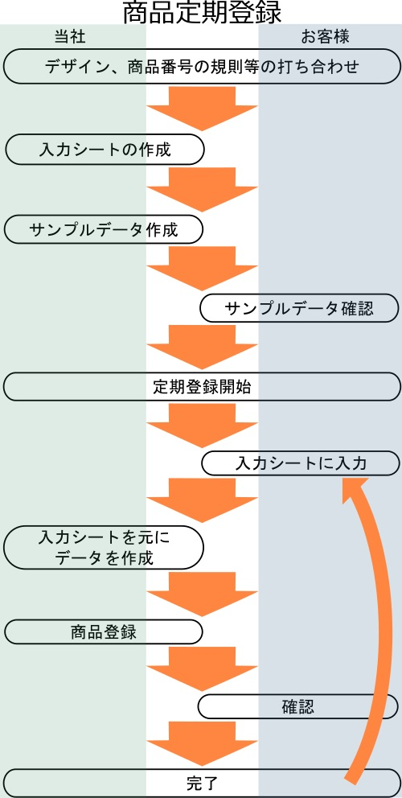
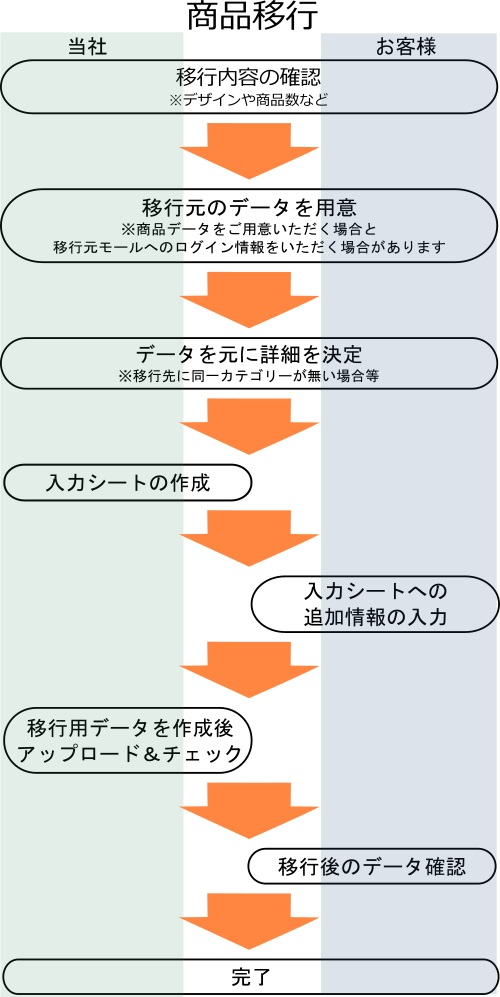

契約後の流れ
契約後の流れ
契約後の流れ
 定期登録
定期登録

デザイン、商品番号規則などの打ち合わせ
スタンダード以上のプランで商品ページのデザインや、弊社システムで商品管理番号を出力できるように生成規則の打ち合わせを行います。 また、お客様の入力項目を減らすため、項目の初期値の設定などもこの段階で行います。
シート作成・サンプルデータ作成
伺った情報をもとに登録用シートを作成します。その後テストデータなどを作成し、作成された商品データに問題がないかを確認していただきます。 また、商品ページのデザイン修正などはこの段階で行います。
定期登録開始
完成した登録用シートへ商品情報を入力し、弊社へ送信していただきます。登録用シートをもとに弊社でデータの作成、登録を行います。 その後、お客様に確認をいただき、商品公開を行います。
商品移行

移行内容の確認
商品数や移行後のデザイン、移行先モール独自の設定についてなど、事前に確認を行います。
移行元データを用意
移行元のCSVデータや、管理データなどから移行用のデータを作成します。 プランによってはモール間の移行でCSVデータがない場合でも対応が可能です。
詳細の決定
移行先のモールにもともと商品のあったカテゴリがない場合や、移行元独自の機能を使っていた場合、移行先でどのように扱うかを決定します。
商品アップロード
データを作成し、登録作業を行います。完成した商品ページはお客様にご確認いただいた後、公開の設定に変更します。